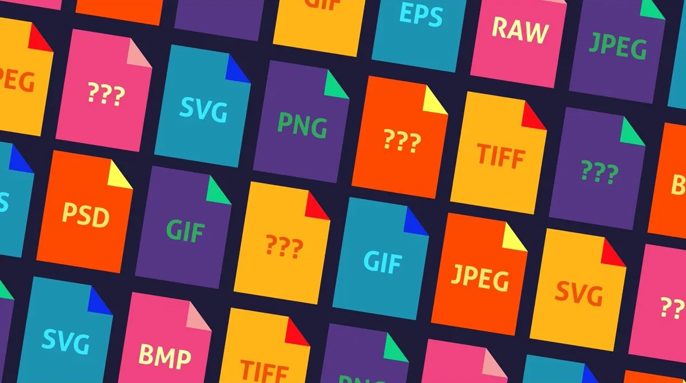

Visual Media Assignment
My First Multipage Website!
This is my first attempt at building a static HTML page with HTML and CSS. In this assignment I have 3 webpages that are linked to this homepage highlighting a few of my interests. This assignment is to help me get familiar with HTML and CSS and how to link multiple pages together. While allowing the user to get to know me a little bettwr. Hope you enjoy!
